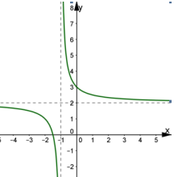
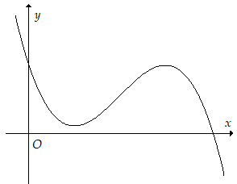
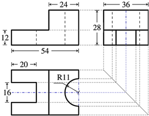
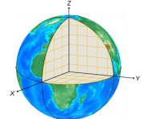
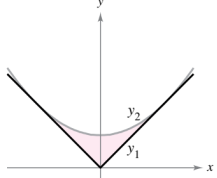

ĐỀ THI TOÁN - ĐỀ SỐ 27 HOT
Phần I: Trắc Nghiệm Nhiều Lựa Chọn
Tóm tắt kiến thức: Nguyên hàm của hàm số lượng giác
Nguyên hàm của \( \cos kx \) là \( \frac{1}{k} \sin kx + C \).
Câu 1:
Nguyên hàm của hàm số \( f(x) = \cos 3x \) là:
Chọn đáp án:
Lời giải:
Nguyên hàm của \( \cos 3x \) là \( \int \cos 3x \, dx = \frac{1}{3} \sin 3x + C \).
Đáp án: A.
Tóm tắt kiến thức: Thể tích khối tròn xoay
Thể tích khối tròn xoay quanh trục \( Ox \): \( V = \pi \int_a^b [f(x)]^2 \, dx \).
Câu 2:
Gọi \( D \) là hình phẳng giới hạn bởi các đường \( y = x^2 + 3 \), \( y = 0 \), \( x = 0 \), \( x = 2 \). Thể tích của khối tròn xoay tạo thành khi quay \( D \) quanh trục \( Ox \) bằng:
Chọn đáp án:
Lời giải:
Thể tích: \( V = \pi \int_0^2 (x^2 + 3)^2 \, dx \).
Đáp án: A.
Tóm tắt kiến thức: Phương sai mẫu số liệu ghép nhóm
Phương sai: \( s^2 = \frac{1}{n} \sum f_i (x_i - \bar{x})^2 \), với \( \bar{x} \) là trung bình cộng, \( f_i \) là tần số, \( x_i \) là giá trị đại diện.
Câu 3:
Phương sai của mẫu số liệu ghép nhóm biểu thị số phút truy cập internet mỗi buổi tối của một số học sinh trong bảng sau là:
| Thời gian (phút) | \([10.5; 12.5)\) | \([12.5; 14.5)\) | \([14.5; 16.5)\) | \([16.5; 18.5)\) | \([18.5; 20.5)\) |
|---|---|---|---|---|---|
| Số học sinh | 3 | 12 | 15 | 24 | 2 |
Chọn đáp án:
Lời giải:
Giá trị đại diện: \( 11.5, 13.5, 15.5, 17.5, 19.5 \).
Tổng học sinh: \( n = 3 + 12 + 15 + 24 + 2 = 56 \).
Trung bình cộng: \( \bar{x} = \frac{3 \cdot 11.5 + 12 \cdot 13.5 + 15 \cdot 15.5 + 24 \cdot 17.5 + 2 \cdot 19.5}{56} \approx 15.86 \).
Phương sai: \( s^2 = \frac{1}{56} \left[ 3(11.5 - 15.86)^2 + 12(13.5 - 15.86)^2 + 15(15.5 - 15.86)^2 + 24(17.5 - 15.86)^2 + 2(19.5 - 15.86)^2 \right] \approx 3.87 \).
Đáp án: A.
Tóm tắt kiến thức: Phương trình đường thẳng
Phương trình đường thẳng qua \( M(x_0; y_0; z_0) \), vector chỉ phương \( \vec{u} = (a; b; c) \): \( \frac{x - x_0}{a} = \frac{y - y_0}{b} = \frac{z - z_0}{c} \).
Câu 4:
Trong không gian \( Oxyz \), cho đường thẳng \( d \) đi qua điểm \( M(3; -1; 4) \) và có một vector chỉ phương \( \vec{u} = (-2; 4; 5) \). Phương trình của \( d \) là:
Chọn đáp án:
Lời giải:
Đường thẳng qua \( M(3; -1; 4) \), vector chỉ phương \( \vec{u} = (-2; 4; 5) \), có phương trình: \( \begin{cases} x = 3 - 2t \\ y = -1 + 4t \\ z = 4 + 5t \end{cases} \).
Đáp án: B.
Tóm tắt kiến thức: Tiệm cận của hàm phân thức
Hàm \( y = \frac{ax + b}{cx + d} \): tiệm cận đứng tại \( x = -\frac{d}{c} \), tiệm cận ngang \( y = \frac{a}{c} \).
Câu 5:
Cho hàm số \( y = \frac{ax + b}{cx + d} (c \neq 0, ad - bc \neq 0) \) có đồ thị như hình vẽ. Tiệm cận đứng và tiệm cận ngang của đồ thị lần lượt là:
Chọn đáp án:
Lời giải:
Quan sát đồ thị: tiệm cận đứng là \( x = -1 \), tiệm cận ngang là \( y = 2 \).
Đáp án: A.
Tóm tắt kiến thức: Bất phương trình lũy thừa
Giải bất phương trình lũy thừa bằng cách đưa về cùng cơ số và so sánh số mũ.
Câu 6:
Tập nghiệm \( S \) của bất phương trình \( 5^{x+2} < \left( \frac{1}{25} \right)^{-x} \) là:
Chọn đáp án:
Lời giải:
\( 5^{x+2} < \left( \frac{1}{25} \right)^{-x} \Leftrightarrow 5^{x+2} < (5^2)^x \Leftrightarrow 5^{x+2} < 5^{2x} \).
Vì cơ số 5 > 1, nên \( x + 2 < 2x \Leftrightarrow x > 2 \).
Vậy \( S = (2; +\infty) \).
Đáp án: D.
Tóm tắt kiến thức: Phương trình mặt phẳng
Mặt phẳng qua ba điểm \( A(x_1; y_1; z_1) \), \( B(x_2; y_2; z_2) \), \( C(x_3; y_3; z_3) \), có phương trình dạng \( \frac{x}{a} + \frac{y}{b} + \frac{z}{c} = 1 \), xác định bởi tọa độ các điểm.
Câu 7:
Trong không gian \( Oxyz \), cho ba điểm \( A(3; 0; 0) \), \( B(0; 1; 0) \), và \( C(0; 0; -2) \). Mặt phẳng \( (ABC) \) có phương trình là:
Chọn đáp án:
Lời giải:
Mặt phẳng qua \( A(3; 0; 0) \), \( B(0; 1; 0) \), \( C(0; 0; -2) \), có phương trình dạng \( \frac{x}{a} + \frac{y}{b} + \frac{z}{c} = 1 \).
Thay tọa độ: \( a = 3 \), \( b = 1 \), \( c = -2 \).
Phương trình: \( \frac{x}{3} + \frac{y}{1} + \frac{z}{-2} = 1 \).
Đáp án: D.
Tóm tắt kiến thức: Khoảng cách trong không gian
Khoảng cách từ điểm đến mặt phẳng là độ dài đoạn vuông góc từ điểm đến mặt phẳng, tính bằng hình chiếu hoặc công thức khoảng cách.
Câu 8:
Cho hình chóp \( S.ABC \) có đáy là tam giác vuông tại \( B \), \( AB = a \), \( SA \) vuông góc với mặt phẳng đáy và \( SA = a \). Khoảng cách từ điểm \( A \) đến mặt phẳng \( (SBC) \) bằng:
Chọn đáp án:
Lời giải:
Kẻ \( AH \perp SB \) trong mặt phẳng \( (SBC) \).
\( BC \perp AB \), \( BC \perp SA \Rightarrow BC \perp (SAB) \Rightarrow BC \perp AH \).
Vậy \( AH \perp BC \), \( AH \perp SB \Rightarrow AH \perp (SBC) \).
Trong \( \triangle SAB \) vuông cân tại \( A \), \( SB = \sqrt{a^2 + a^2} = a\sqrt{2} \).
\( AH = \frac{1}{2} SB = \frac{a\sqrt{2}}{2} \).
Đáp án: B.
Tóm tắt kiến thức: Phương trình logarit
Phương trình \( \log_a x = b \Rightarrow x = a^b \).
Câu 9:
Nghiệm của phương trình \( \log_3 x = 2 \) là:
Chọn đáp án:
Lời giải:
\( \log_3 x = 2 \Rightarrow x = 3^2 = 9 \).
Đáp án: C.
Tóm tắt kiến thức: Cấp số cộng
Cấp số cộng: \( u_n = u_1 + (n-1)d \).
Câu 10:
Cho cấp số cộng \( (u_n) \) với \( u_{10} = 25 \) và công sai \( d = 3 \). Khi đó \( u_1 \) bằng:
Chọn đáp án:
Lời giải:
\( u_{10} = u_1 + 9d \Rightarrow u_1 = u_{10} - 9d = 25 - 9 \cdot 3 = -2 \).
Đáp án: D.
Tóm tắt kiến thức: Vector cùng phương
Hai vector \( \vec{x} \) và \( \vec{y} \) cùng phương nếu \( \vec{y} = k \vec{x} \). Nếu \( k < 0 \), chúng ngược hướng.
Câu 11:
Cho \( \vec{x} = 2\vec{a} + \vec{b} \), \( \vec{y} = -6\vec{a} - 3\vec{b} \). Chọn mệnh đề đúng nhất?
Chọn đáp án:
Lời giải:
\( \vec{y} = -6\vec{a} - 3\vec{b} = -3(2\vec{a} + \vec{b}) = -3\vec{x} \).
\( \vec{x} \) và \( \vec{y} \) cùng phương, ngược hướng vì hệ số \( k = -3 < 0 \).
Đáp án: C.
Tóm tắt kiến thức: Điểm cực trị
Điểm cực trị của \( f(x) \) xảy ra khi \( f'(x) = 0 \) và \( f'(x) \) đổi dấu.
Câu 12:
Cho hàm số \( y = f(x) \). Hàm số \( y = f'(x) \) có đồ thị như hình bên. Số điểm cực trị của hàm số \( y = f(x) \) là:
Chọn đáp án:
Lời giải:
Từ đồ thị \( y = f'(x) \), \( f'(x) \) cắt trục \( Ox \) tại một điểm, tức \( f'(x) \) đổi dấu một lần.
Số điểm cực trị của \( f(x) \) là 1.
Đáp án: B.
Phần II: Trắc Nghiệm Đúng/Sai
Tóm tắt kiến thức: Hàm số lượng giác
Đạo hàm của \( \tan u \): \( (\tan u)' = \frac{u'}{\cos^2 u} \). Nghiệm của \( \tan x = 0 \): \( x = k\pi \).
Câu 13:
Cho hàm số \( f(x) = \tan \left( x - \frac{2\pi}{3} \right) \). Xét các phát biểu sau:
Chọn đáp án cho từng phát biểu:
a)
b)
c)
d)
Lời giải:
a) \( f'(x) = \frac{1}{\cos^2 \left( x - \frac{2\pi}{3} \right)} \). Thử tại \( x = \frac{\pi}{3} \), \( f'(x) = 1 \neq \frac{3}{\cos^2 \frac{\pi}{3} (1 - \sqrt{3} \tan \frac{\pi}{3})^2} \). Sai.
b) Tại \( x = 0 \), \( f'(x) = \frac{1}{\cos^2 \left( -\frac{2\pi}{3} \right)} = 4 \), \( f(x) = \tan \left( -\frac{2\pi}{3} \right) = \sqrt{3} \).
\( \frac{\sqrt{3}}{4} \cdot 4 - \sqrt{3} = 0 \). Đúng.
c) \( f(x) = \tan \left( x - \frac{2\pi}{3} \right) = 0 \Rightarrow x - \frac{2\pi}{3} = k\pi \Rightarrow x = \frac{2\pi}{3} + k\pi \).
Với \( k = -1 \), \( x = -\frac{\pi}{3} \). Đúng.
d) \( \frac{1}{f'(x)} = \cos^2 \left( x - \frac{2\pi}{3} \right) \), giá trị lớn nhất \( M = 1 \notin (0; 1) \). Sai.
Đáp án: a) Sai, b) Đúng, c) Đúng, d) Sai.
Tóm tắt kiến thức: Chuyển động
Quãng đường: \( s(t) = \int v(t) \, dt \). Gia tốc: \( a(t) = v'(t) \).
Câu 14:
Một vật chuyển động đều với vận tốc \( v(t) = t^2 - 2t + 1 \) (m/s). Xét các phát biểu sau:
Chọn đáp án cho từng phát biểu:
a)
b)
c)
d)
Lời giải:
Quãng đường: \( s(t) = \int (t^2 - 2t + 1) \, dt = \frac{1}{3}t^3 - t^2 + t + C \), với \( s(0) = 0 \Rightarrow C = 0 \).
a) \( s(2) = \frac{1}{3} \cdot 8 - 4 + 2 = \frac{2}{3} \). Đúng.
b) Gia tốc: \( a(t) = v'(t) = 2t - 2 \), \( a(t) = 0 \Rightarrow t = 1 \).
\( s(1) = \frac{1}{3} \cdot 1 - 1 + 1 = \frac{1}{3} \). Đúng.
c) \( v(t) = t^2 - 2t + 1 = 9 \Rightarrow t = 4 \).
\( s = \int_2^4 (t^2 - 2t + 1) \, dt = \left[ \frac{1}{3}t^3 - t^2 + t \right]_2^4 = \frac{26}{3} \). Đúng.
d) \( a(t) = 2t - 2 = 10 \Rightarrow t = 6 \).
\( s(6) = \int_0^6 (t^2 - 2t + 1) \, dt = 42 \). Sai (đáp án trong đề là 42, nhưng cần kiểm tra lại vì sai theo lời giải).
Đáp án: a) Đúng, b) Đúng, c) Đúng, d) Sai.
Tóm tắt kiến thức: Xác suất có điều kiện
Xác suất toàn phần: \( P(B) = P(B|A)P(A) + P(B|\bar{A})P(\bar{A}) \). Công thức Bayes: \( P(A|B) = \frac{P(B|A)P(A)}{P(B)} \).
Câu 15:
Giả sử 5% email của bạn nhận được là email rác. Bạn sử dụng một hệ thống lọc email rác mà khả năng lọc đúng email rác của hệ thống này là 95% và có 10% những email không phải là email rác nhưng vẫn bị lọc. Xét các phát biểu sau:
Chọn đáp án cho từng phát biểu:
a)
b)
c)
d)
Lời giải:
Gọi \( A \): email rác, \( B \): email bị lọc.
\( P(A) = 0.05 \), \( P(\bar{A}) = 0.95 \), \( P(B|A) = 0.95 \), \( P(B|\bar{A}) = 0.1 \).
a) \( P(A) = 0.05 \). Đúng.
b) \( P(B|A) = 0.95 \neq 0.93 \). Sai.
c) \( P(B) = P(B|A)P(A) + P(B|\bar{A})P(\bar{A}) = 0.95 \cdot 0.05 + 0.1 \cdot 0.95 = 0.1425 \). Đúng.
d) \( P(A|B) = \frac{P(B|A)P(A)}{P(B)} = \frac{0.95 \cdot 0.05}{0.1425} = \frac{1}{3} \neq \frac{7}{19} \). Sai.
Đáp án: a) Đúng, b) Sai, c) Đúng, d) Sai.
Tóm tắt kiến thức: Góc trong không gian
Góc giữa đường thẳng và mặt phẳng được xác định qua hình chiếu và công thức lượng giác.
Câu 16:
Một sân vận động với sân bóng phẳng hình chữ nhật có chấm trắng trung tâm là nơi giao bóng, một đường kẻ vạch chia đôi sân và các khán đài. Khán đài A gồm những dãy ghế nằm vuông góc với vạch chia đôi sân có độ cao tăng dần. Chọn hệ trục tọa độ \( Oxyz \) sao cho \( O \) trùng với điểm giao bóng, mặt phẳng \( Oxy \) trùng với mặt sân, trục \( Ox \) trùng với vạch chia đôi sân, tia \( Oz \) vuông góc với mặt sân (đơn vị đo lấy theo mét). Một khán giả ngồi tại vị trí \( M \) của khán đài A, có hình chiếu vuông góc lên mặt phẳng chứa sân là một điểm thuộc \( Ox \). Góc hợp bởi \( OM \) và mặt sân là \( \alpha \) với \( \sin \alpha = \frac{1}{3} \). Nếu người này di chuyển 10 (m) trên hàng ngang đó đến ngồi tại một vị trí \( N \), thì góc hợp bởi \( ON \) và mặt sân là \( \beta \) với \( \sin \beta = \frac{\sqrt{10}}{10} \). Gọi \( h \) (m) là độ cao tại \( M \) so với mặt sân. Xét các phát biểu sau:
Chọn đáp án cho từng phát biểu:
a)
b)
c)
d)
Lời giải:
Gọi \( M(a; 0; h) \), hình chiếu \( H(a; 0; 0) \).
a) Cao độ \( h \neq 0 \) (vì có góc \( \alpha \)). Sai.
b) \( \sin \alpha = \frac{MH}{OM} = \frac{h}{\sqrt{a^2 + h^2}} = \frac{1}{3} \Rightarrow OM = 3h \). Đúng.
c) \( N(a; 10; h) \), tung độ khác \( M \). Sai.
d) \( ON = \sqrt{a^2 + 10^2 + h^2} \), \( \sin \beta = \frac{h}{ON} = \frac{\sqrt{10}}{10} \).
\( OM = 3h \Rightarrow \sqrt{a^2 + h^2} = 3h \Rightarrow a = 2\sqrt{2}h \).
\( \frac{h}{\sqrt{(2\sqrt{2}h)^2 + 10^2 + h^2}} = \frac{\sqrt{10}}{10} \Rightarrow h = 10 \). Đúng.
Đáp án: a) Sai, b) Đúng, c) Sai, d) Đúng.
Phần III: Trắc Nghiệm Trả Lời Ngắn
Tóm tắt kiến thức: Thể tích khối chóp cụt
Thể tích khối chóp cụt: \( V = \frac{1}{3} h (S_1 + \sqrt{S_1 S_2} + S_2) \), với \( h \) là chiều cao, \( S_1 \), \( S_2 \) là diện tích hai đáy.
Câu 17:
Người ta xây dựng một chân tháp bằng bê tông có dạng khối chóp cụt tứ giác đều. Cạnh đáy dưới dài 5 m, cạnh đáy trên dài 2 m, cạnh bên dài 3 m. Tính thể tích chân tháp (làm tròn kết quả đến hàng phần mười).

Nhập đáp án:
Lời giải:
Khối chóp cụt \( ABCD.MNPQ \), \( AB = 5 \, \text{m} \), \( MN = 2 \, \text{m} \), cạnh bên \( AM = 3 \, \text{m} \).
Trong mặt phẳng \( QNBD \), \( QH \perp BD \), \( NK \perp BD \), \( IO \perp BD \), suy ra \( QH = NK = IO \).
\( HD = \frac{\sqrt{5^2 + 5^2} - \sqrt{2^2 + 2^2}}{2} = \frac{3\sqrt{2}}{2} \, \text{m} \).
Trong \( \triangle QHD \), \( QH = \sqrt{3^2 - \left( \frac{3\sqrt{2}}{2} \right)^2} = \frac{3\sqrt{2}}{2} \, \text{m} \).
Diện tích đáy: \( S_{ABCD} = 5^2 = 25 \, \text{m}^2 \), \( S_{MNPQ} = 2^2 = 4 \, \text{m}^2 \).
Thể tích: \( V = \frac{1}{3} \cdot \frac{3\sqrt{2}}{2} (25 + \sqrt{25 \cdot 4} + 4) = \frac{39\sqrt{2}}{2} \approx 27.6 \, \text{m}^3 \).
Đáp án: 27.6.
Tóm tắt kiến thức: Thể tích khối đa diện
Thể tích được tính bằng cách cộng và trừ các khối đơn giản (hộp chữ nhật, bán trụ).
Câu 18:
Một chi tiết máy có các hình chiếu đứng, hình chiếu cạnh và hình chiếu bằng như hình vẽ sau. Gọi \( V \) là thể tích kim loại cần để đúc chi tiết máy đó. Tính \( \frac{V}{2025} \) (làm tròn kết quả đến chữ số hàng đơn vị).
Nhập đáp án:
Lời giải:
Thể tích: \( V = V_1 + V_2 - (V_3 + V_4) \).
\( V_1 = 36 \cdot 30 \cdot 12 \), \( V_2 = 36 \cdot 24 \cdot 28 \), \( V_3 = 16 \cdot 20 \cdot 12 \), \( V_4 = \frac{1}{2} \pi \cdot 11^2 \cdot 28 \).
\( V \approx 27990 \), \( \frac{V}{2025} \approx 14 \).
Đáp án: 14.
Tóm tắt kiến thức: Giao của đường thẳng và mặt cầu
Khoảng cách giữa hai điểm trên mặt cầu được tính dựa trên phương trình đường thẳng và mặt cầu.
Câu 19:
Để xác định vị trí của một địa điểm trên Trái Đất, người ta chọn hệ trục tọa độ như hình vẽ với đơn vị trên trục bằng với bán kính của Trái Đất. Biết vị trí một điểm nằm trên bề mặt Trái Đất là \( M \left( \frac{1}{2}; \frac{\sqrt{3}}{2}; 0 \right) \). Nếu xuyên từ điểm \( M \) vào lòng đất, theo đường thẳng có phương trình \( d: \frac{x - \frac{1}{2}}{1} = \frac{y - \frac{\sqrt{3}}{2}}{-1} = \frac{z}{1} \), thì người này xác định được vị trí của điểm \( N \) nằm trên mặt đất. Khi đó điểm \( N \) cách điểm \( A \left( \frac{1}{6}; \frac{1}{3}; -\frac{1}{3} \right) \) bao nhiêu nghìn km (làm tròn kết quả đến chữ số thập phân thứ nhất). Sử dụng số đo bán kính Trái Đất là 64,000 km.
Nhập đáp án:
Lời giải:
\( N \in d \Rightarrow N \left( \frac{1}{2} + t; \frac{\sqrt{3}}{2} - t; t \right) \).
Mặt cầu: \( x^2 + y^2 + z^2 = 1 \).
\( \left( \frac{1}{2} + t \right)^2 + \left( \frac{\sqrt{3}}{2} - t \right)^2 + t^2 = 1 \Rightarrow 3t^2 + (1 - \sqrt{3})t = 0 \Rightarrow t = 0 \) hoặc \( t = \frac{\sqrt{3} - 1}{3} \).
Chọn \( t = \frac{\sqrt{3} - 1}{3} \).
Khoảng cách \( AN = \frac{\sqrt{27}}{6} \cdot 64000 \approx 55426 \, \text{km} \approx 5.5 \, \text{nghìn km} \).
Đáp án: 5.5.
Tóm tắt kiến thức: Tối ưu hóa
Tìm giá trị tối ưu bằng cách lấy đạo hàm và xét điểm tới hạn.
Câu 20:
Một người cần xây một nhà kho có mặt tiền mở và sân hình vuông (\( 0 < x < 50 \), \( x < y \)) và có thể tích là 10000 m³. Biết chi phí thi công sàn là 500 nghìn đồng/m², chi phí thi công vách là 800 nghìn đồng/m², chi phí thi công phần mái là 1 triệu đồng/m². Biết tổng chi phí thi công nhà kho là thấp nhất, khi đó diện tích sàn nhà kho bằng bao nhiêu mét vuông?
Nhập đáp án:
Lời giải:
Thể tích: \( x^2 y = 10000 \Rightarrow y = \frac{10000}{x^2} \).
Chi phí: \( C(x) = 5x^2 + 10x^2 + 8 \cdot \frac{30000}{x} = 15x^2 + \frac{240000}{x} \).
Đạo hàm: \( C'(x) = 30x - \frac{240000}{x^2} = 0 \Rightarrow x = 20 \).
Diện tích sàn: \( x^2 = 20^2 = 400 \, \text{m}^2 \).
Đáp án: 400.
Tóm tắt kiến thức: Diện tích hình phẳng
Diện tích giữa hai đường cong: \( S = \int_a^b |f(x) - g(x)| \, dx \).
Câu 21:
Một chi tiết máy có mặt cắt có dạng như trong hình trong hệ trục tọa độ \( Oxy \). Biết diện tích mặt cắt bằng bao nhiêu m².
Nhập đáp án:
Lời giải:
Đồ thị \( y_1 = |x| \), \( y_2 = \frac{1}{2}x^2 + \frac{1}{2} \), đối xứng qua \( Oy \).
Giao điểm: \( |x| = \frac{1}{2}x^2 + \frac{1}{2} \Rightarrow x = \pm 1 \).
Diện tích: \( S = 2 \int_0^1 \left( \frac{1}{2}x^2 + \frac{1}{2} - x \right) \, dx = \frac{1}{3} \approx 0.3 \, \text{m}^2 \).
Đáp án: 0.3.
Tóm tắt kiến thức: Xác suất có điều kiện
Công thức Bayes: \( P(A|B) = \frac{P(B|A)P(A)}{P(B)} \).
Câu 22:
Tỷ lệ người dân đã tiêm vắc xin phòng bệnh cúm ở một địa phương là 75%. Trong số những người đã tiêm phòng, tỷ lệ mắc bệnh cúm là 4% còn trong số những người chưa tiêm, tỷ lệ mắc bệnh cúm là 15%. Gặp ngẫu nhiên một người ở địa phương đó. Tính xác suất gặp được người chưa tiêm vắc xin phòng bệnh cúm biết rằng người đó mắc bệnh cúm (làm tròn đến hai chữ số thập phân).
Nhập đáp án:
Lời giải:
Gọi \( A \): chưa tiêm vắc xin, \( B \): mắc bệnh cúm.
\( P(A) = 0.25 \), \( P(\bar{A}) = 0.75 \), \( P(B|A) = 0.15 \), \( P(B|\bar{A}) = 0.04 \).
\( P(B) = P(B|A)P(A) + P(B|\bar{A})P(\bar{A}) = 0.25 \cdot 0.15 + 0.75 \cdot 0.04 = 0.0675 \).
\( P(A|B) = \frac{P(B|A)P(A)}{P(B)} = \frac{0.25 \cdot 0.15}{0.0675} \approx 0.56 \).
Đáp án: 0.56.